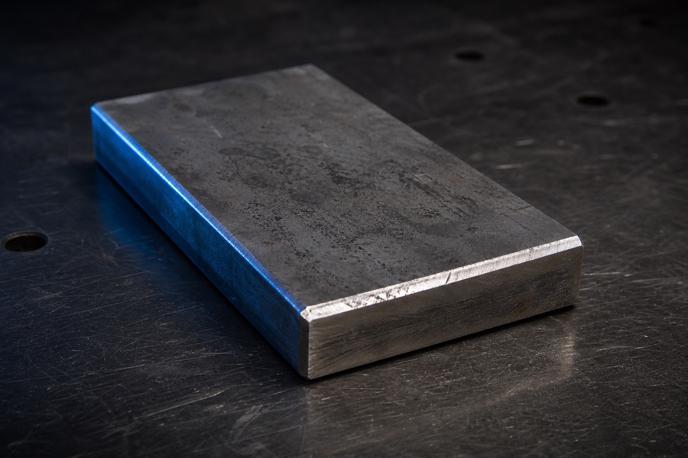

TIG welding
Clean, controlled welds for stainless, aluminum, titanium, magnesium, and custom components where prep and heat control matter.
Henderson, Nevada fabrication shop
ADK handles TIG welding, CAD-supported design, custom metal fabrication, truck parts, trailer repair, air ride, hydraulics, laser cutting, and one-off metalwork from its Henderson shop.
Capability index
Instead of treating services like separate boxes, ADK connects design, material prep, welding, repair, and fitment into one shop process.
Clean, controlled welds for stainless, aluminum, titanium, magnesium, and custom components where prep and heat control matter.
One-off metalwork, brackets, mounts, structural pieces, and job-specific metal solutions.
Digital part design, mockups, revisions, and refinement before the first cut.
First-run parts, physical mockups, test pieces, and fitment checks for custom builds.

Frame repair, reinforcement, hitch repair, cross members, and structural welding.
Precise cuts for repeatable parts, brackets, panels, tabs, and components.
Custom parts, air ride components, suspension pieces, and fitment-focused truck products.
Custom air ride fabrication, component support, routing, mounting, and setup work.
Hydraulic fabrication support, mounts, routing considerations, and custom hardware.
Material-specific fabrication where prep, heat control, filler choice, cleanliness, and process discipline decide the final result.
Mounts, brackets, storage solutions, tank mounts, and field-ready accessories.
Custom brackets, mounting solutions, tabs, support hardware, and install-specific parts.
Shop process
ADK keeps the work practical: understand the job, confirm measurements, build around fitment, and finish the part for real use.
Define the part, repair, vehicle, material, and intended use.
Capture the dimensions, photos, access points, and constraints that affect fitment.
Model or mock up the work so the first cut has a plan behind it.
Fabricate with material-aware prep, process control, and clean weld sequencing.
Check clearances, mounting points, service access, and real-world use.
Finish, ship, install, or prep the component for its next step.
Materials matter
ADK does more than weld metal. The shop reviews material, prep, heat input, access, finish, and what the part has to survive.

Steel
Build review
Send photos, measurements, vehicle details, and the result you need. ADK will review the scope and point the project toward fabrication, repair, store parts, or a quote.